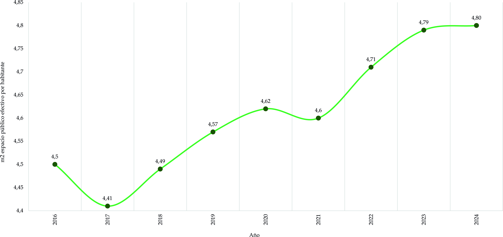
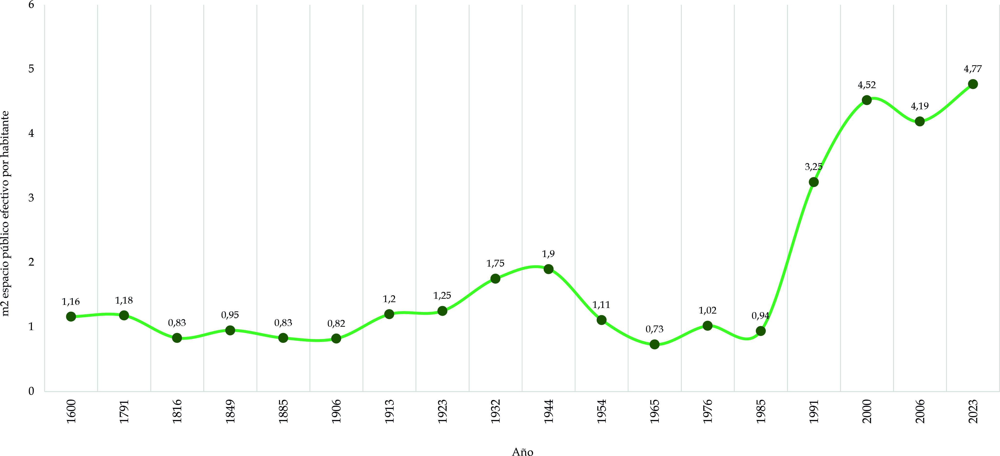

Esta sección presenta la evolución del espacio público, particularmente en su relación con el ordenamiento territorial y su consolidación como eje estructurante del desarrollo urbano. La Nueva Agenda Urbana y los Objetivos de Desarrollo Sostenible —especialmente el ODS No. 11 “Ciudades y comunidades sostenibles”— reconocen el espacio público como un elemento fundamental para la construcción de ciudades inclusivas, seguras, resilientes y sostenibles.
En el contexto de Bogotá el espacio público ha transitado de ser una categoría jurídica asociada a bienes de uso común a convertirse en un componente estratégico del modelo territorial distrital, vinculado a la equidad, la sostenibilidad ambiental y la cohesión social.
3.1. Antecedentes del espacio público en el Ordenamiento Territorial
Como primer antecedente del espacio público en su forma más genérica es necesario remontarse a la segunda mitad del siglo XIX con la expedición de la Ley 84 de 1873, cuyo artículo 674 reconoce los “Bienes de la Unión” y establece que aquellos cuyo uso pertenece a todos los habitantes —como calles, plazas, puentes y caminos— son bienes de uso público.
Posteriormente, la Constitución Política de Colombia de 1991 consolidó la protección constitucional del espacio público. El artículo 63 dispone que los bienes de uso público son inalienables, imprescriptibles e inembargables. A su vez, el artículo 82 establece que es deber del Estado velar por la protección de la integridad del espacio público y por su destinación al uso común, el cual prevalece sobre el interés particular.
La jurisprudencia constitucional ha reforzado esta protección. La Sentencia C-265 de 2002 de la Corte Constitucional señala que el espacio público es condición material para el ejercicio de derechos colectivos como la recreación (art. 52 C.P.) y el goce de un ambiente sano (art. 79 C.P.), en coherencia con el modelo de Estado Social de Derecho. El Constituyente de 1991 consideró necesario brindar al espacio público una protección expresa de rango constitucional. Esta decisión resulta claramente compatible con los principios que orientan la Carta Política y con el señalamiento del tipo de Estado en el que a aspiran vivir los colombianos. Sin duda, una de las manifestaciones del principio constitucional que identifica a Colombia como un Estado Social de Derecho guarda relación con la garantía de una serie de derechos sociales y colectivos como la recreación (artículo 52 C.P.), el aprovechamiento del tiempo libre (Ibíd.) y el goce de un medio ambiente sano (artículo 79 C.P.) que dependen de la existencia de un espacio físico a disposición de todos los habitantes.
Más adelante, la Ley 1801 de 2016-Código Nacional de Seguridad y Convivencia Ciudadana definió en su artículo 139 el espacio público como el conjunto de bienes muebles e inmuebles destinados a la satisfacción de necesidades colectivas que trascienden intereses individuales, el cual textualmente dice:
Artículo 139. Definición del espacio público. Es el conjunto de muebles e inmuebles públicos, bienes de uso público, bienes fiscales, áreas protegidas y de especial importancia ecológica y los elementos arquitectónicos y naturales de los inmuebles privados, destinados por su naturaleza, usos o afectación, a la satisfacción de necesidades colectivas que trascienden los límites de los intereses individuales de todas las personas en el territorio nacional.
La definición continúa con todos los elementos constitutivos del espacio público que incluye:
El subsuelo, el espectro electromagnético, las áreas requeridas para la circulación peatonal, en bicicleta y vehicular; la recreación pública, activa o pasiva; las franjas de retiro de las edificaciones sobre las vías y aislamientos de las edificaciones, fuentes de agua, humedales, rondas de los cuerpos de agua, parques, plazas, zonas verdes y similares; las instalaciones o redes de conducción de los servicios públicos básicos; las instalaciones y los elementos constitutivos del amoblamiento urbano en todas sus expresiones; las obras de interés público y los elementos históricos, culturales, religiosos, recreativos, paisajísticos y artísticos; los terrenos necesarios para la preservación y conservación de las playas marinas y fluviales; los terrenos necesarios de bajamar, así como sus elementos vegetativos, arenas, corales y bosques nativos, legalmente protegidos; la zona de seguridad y protección de la vía férrea; las estructuras de transporte masivo y, en general, todas las zonas existentes y debidamente afectadas por el interés colectivo manifiesto y conveniente y que constituyen, por consiguiente, zonas para el uso o el disfrute colectivo.
Como puede apreciarse, el espectro del espacio público es muy amplio, de ahí que en cuanto a legislación nacional se refiere una gran cantidad de leyes transversales al espacio público siendo las más importantes las siguientes:
- Ley 9a de 1989: “Por la cual se dictan normas sobre planes de desarrollo municipal, compraventa y expropiación de bienes y se dictan otras disposiciones”.
- Ley 99 de 1993–Ley Ambiental: “Por la cual se crea el Ministerio del Medio Ambiente, se reordena el Sector Público encargado de la gestión y conservación del medio ambiente y los recursos naturales renovables, se organiza el Sistema Nacional Ambiental, SINA, y se dictan otras disposiciones”.
- Ley 140 de 1994 –Publicidad Exterior Visual: “Por la cual se reglamenta la Publicidad Exterior Visual en el Territorio Nacional”.
- Ley 142 de 1994–Servicios Públicos Domiciliarios:
- Ley 388 de 1997: “Por la cual se modifica la Ley 9 de 1989, y la Ley 2 de 1991 y se dictan otras disposiciones”.
- Ley 472 de 1998–Ley de Acciones Populares: “Por la cual se desarrolla el artículo 88 de la Constitución Política de Colombia en relación con el ejercicio de las acciones populares y de grupo y se dictan otras disposiciones”.
- Ley 769 de 2002–Código Nacional de Tránsito y Transporte: “Por la cual se expide el Código Nacional de Tránsito Terrestre y se dictan otras disposiciones”.
En cuanto a la reglamentación nacional, El Decreto 1504 de 1998 reglamentó el manejo del espacio público en los POT, disposiciones posteriormente compiladas en el Decreto 1077 de 2015, Decreto Único Reglamentario del Sector Vivienda, Ciudad y Territorio. En consecuencia, el concepto de espacio público evolucionó desde una noción patrimonial hacia una categoría estructural del ordenamiento territorial, con implicaciones sociales, ambientales y económicas.
3.2. El espacio público en el Plan de Ordenamiento Territorial
En Bogotá el espacio público constituye uno de los sistemas estructurantes del modelo territorial y se configura como un elemento central en la construcción de una ciudad más equitativa y sostenible. Con la expedición del Decreto 555 de 2021 se redefine el sistema de espacio público peatonal y para el encuentro como componente articulador de la Estructura Ecológica Principal, la movilidad sostenible y la red de equipamientos, consolidando una visión sistémica que supera la noción tradicional de espacio público como simple dotación física.
El POT 555 introduce un enfoque de proximidad y equidad territorial, orientado a reducir brechas históricas en la distribución del espacio público efectivo por habitante entre las distintas localidades de la ciudad. En este marco, se prioriza la generación de parques de borde asociados a la protección ambiental y contención de la expansión urbana, el fortalecimiento de parques de proximidad que garanticen acceso peatonal a escala barrial y la intervención en Unidades de Planeamiento Local-UPL con mayores déficits cuantitativos y cualitativos.
Adicionalmente, el nuevo POT incorpora el concepto de red de cuidado y ciudad caminable, promoviendo la consolidación de entornos seguros, accesibles y conectados que faciliten desplazamientos a pie y en bicicleta. En este sentido, el espacio público se integra con los corredores verdes, las alamedas, las ciclorrutas y los proyectos de revitalización urbana, especialmente en áreas estratégicas como los bordes de la ciudad, los ejes de movilidad masiva y las zonas de renovación.
El enfoque ambiental también adquiere mayor relevancia, al articular el sistema de espacio público con la estructura ecológica principal, los cerros orientales, las rondas hídricas y los parques metropolitanos. Esta integración busca fortalecer la resiliencia climática mediante la ampliación de cobertura vegetal, la recuperación de suelos y la implementación de soluciones basadas en la naturaleza que contribuyan a la mitigación de islas de calor y al manejo de aguas lluvias.
De esta manera el espacio público en el POT 555 deja de entenderse únicamente como indicador de metros cuadrados por habitante y se consolida como instrumento de ordenamiento que incide directamente en la cohesión social, la sostenibilidad ambiental y la calidad de vida urbana en Bogotá.
Gráfico 1. Espacio público efectivo por habitante de Bogotá 2016-2024

Fuente: Elaboración Sociedad de Mejoras y Ornato de Bogotá con base en Reportes técnicos de indicadores de espacio público3.2.1. Espacio público efectivo
Es de vital importancia en el ordenamiento territorial distrital y el desarrollo futuro de la ciudad la reducción del déficit cuantitativo del espacio público, el cual se mide con base en un índice mínimo de espacio público efectivo, es decir el espacio público de carácter permanente, conformado por zonas verdes, parques, plazas y plazoletas.
La Organización Mundial de la Salud-OMS, fijó un indicador óptimo entre 10 m2 y 15 m2 de zonas verdes por habitante, no obstante, los POT pueden determinar metas menores de corto y mediano plazo para alcanzar paulatinamente este indicador.
Durante la vigencia del Decreto 190 de 2004 fue formuló el Plan Maestro de Espacio Público para Bogotá Distrito Capital (Decreto 215 de 2005) que fijó una meta de 6 m² por habitante en parques, plazas y plazoletas de todas las escalas.
Luego el Decreto 436 de 2006 buscó reglamentar la generación de espacio público en actuaciones en suelo de tratamiento de desarrollo, para lo que se estableció en el artículo 9 que los planes parciales en los que se proyectasen productos inmobiliarios diferentes a vivienda mínima y/o vivienda de interés prioritario aportarán las cesiones mínimas locales para parques teniendo como estándar 4 m2 de zonas verdes por habitante.
Actualmente con el Decreto 555 de 2021, cuyo anexo 3 contiene un inventario detallado del espacio Público peatonal y para el encuentro, prevé aumentar la cobertura del espacio público mediante la generación de parques de borde y parques de proximidad en las Unidades de Planeamiento Local-UPL deficitarias, a través de acciones y actuaciones urbanísticas, así como transformando elementos del espacio público total en espacio público peatonal y para el encuentro1 .
A modo de retrospectiva y con base en todo lo anterior, se presenta a continuación la siguiente gráfico que ilustra la evolución del espacio público efectivo, que en un principio lo conformaron las principales plazas y plazoletas de encuentro ciudadano, luego con las iniciativas y reglamentaciones a nivel de salubridad pública del siglo XX se incorporaron los parques y zonas verdes hasta la actualidad donde el espacio público es una política nacional y propende por mejorar y aumentar la disponibilidad de espacio público para disfrute de los habitantes.
Gráfico 2. Evolución del EPE 1600 a 2023

Fuente: Elaboración Sociedad de Mejoras y Ornato de Bogotá, disponible en la plataforma DATACIVILIDAD-Componente territorial-Evolución de la huella urbana3.2.2. Institucionalidad en el manejo del espacio público en Bogotá
La gestión del espacio público en Bogotá ha implicado la consolidación progresiva de una institución especializada, dada la complejidad jurídica, territorial y social que supone su administración. El espacio público no constituye únicamente un inventario de bienes, sino un sistema urbano transversal que articula movilidad, ambiente, cultura, recreación, infraestructura, patrimonio y desarrollo económico, lo que exige coordinación interinstitucional permanente.
Mediante el Acuerdo 018 de 1999 el Concejo Distrital creó el Departamento Administrativo de la Defensoría del Espacio Público-DADEP, entidad adscrita a la Administración Central con la misión de contribuir al mejoramiento de la calidad de vida de los habitantes a través de la defensa, administración, inspección, vigilancia, regulación y control del espacio público del Distrito Capital. Esta entidad se estructura en tres subdirecciones —Gestión Inmobiliaria y del Espacio Público, Registro Inmobiliario y Gestión Corporativa— y cuenta con oficinas asesoras de planeación, jurídica, tecnologías de la información, control interno, comunicaciones y control disciplinario interno, lo que le permite abordar tanto la dimensión técnica como la jurídica y administrativa del espacio público.
Sin embargo, la gestión no recae exclusivamente en el DADEP. La naturaleza diversa del espacio público exige la participación de múltiples entidades distritales según la vocación del bien o la actividad desarrollada en él. Así, intervienen entidades como la Secretaría Distrital de Ambiente en lo relacionado con la estructura ecológica principal; la Secretaría Distrital de Movilidad y el Instituto de Desarrollo Urbano, en lo concerniente a la malla vial y el espacio público asociado a la movilidad; el Instituto Distrital de Recreación y Deporte en la administración de parques; el Instituto Distrital de las Artes y el Instituto Distrital de Patrimonio Cultural en actividades culturales y patrimoniales; el Instituto para la Economía Social en lo relativo a vendedores informales; así como TRANSMILENIO S. A. y la Empresa Metro de Bogotá en la infraestructura asociada al transporte masivo. Esta multiplicidad institucional refleja la condición sistémica del espacio público y evidencia la necesidad de esquemas de gobernanza coordinada.
En el ámbito técnico el DADEP ha fortalecido la producción de información estratégica mediante el Observatorio de Espacio Público, instancia encargada de consolidar, analizar y actualizar los indicadores distritales. La metodología adoptada se fundamenta en tres categorías estratégicas denominadas “estar, conectar y proteger”. La categoría “estar” se asocia a la permanencia y calidad de los espacios destinados al encuentro y la recreación; “conectar” se relaciona con la movilidad peatonal, la accesibilidad y la continuidad urbana y, “proteger” se vincula con la sostenibilidad ambiental, la cobertura vegetal y la integración con la estructura ecológica principal.
Estas categorías permiten evaluar no sólo la disponibilidad física del espacio público, sino también su funcionalidad, accesibilidad y aporte a la calidad ambiental. Los indicadores se calculan a distintas escalas territoriales —localidad, UPZ y UPL— lo que facilita identificar brechas territoriales y orientar la priorización de intervenciones conforme a los lineamientos del Decreto 555 de 2021.
A pesar de contar con un marco institucional consolidado, la gestión del espacio público enfrenta desafíos estructurales. Entre ellos se destacan la fragmentación competencial derivada de la intervención de múltiples actores, los conflictos de uso asociados a ventas informales y actividades de aprovechamiento económico, las limitaciones presupuestales para el mantenimiento preventivo y correctivo y las brechas territoriales históricas que han concentrado mayores niveles de inversión en zonas centrales frente a sectores periféricos. Asimismo, la incorporación del enfoque de cambio climático y resiliencia urbana plantea nuevos retos en términos de infraestructura verde, manejo hídrico y adaptación ambiental.
En este contexto, el espacio público se configura como un escenario de gobernanza urbana compleja, en el cual confluyen intereses sociales, económicos y ambientales que deben armonizarse bajo el principio constitucional de prevalencia del interés general. El Plan de Ordenamiento Territorial adoptado mediante el Decreto 555 de 2021 refuerza esta visión al integrar el sistema de espacio público peatonal y para el encuentro con la estructura ecológica principal, el sistema de movilidad sostenible y la red de equipamientos, consolidando así un enfoque estratégico orientado a la equidad territorial y a la mejora de la calidad urbana.
En este marco institucional la implementación efectiva de la política de espacio público depende de instrumentos técnicos, normativos y financieros que materialicen las disposiciones del POT y orienten la intervención territorial.
3.2.3. Instrumentos
La Administración Distrital expidió el Decreto 315 de 2024 para la reglamentación del aprovechamiento económico del espacio público y la explotación económica de la infraestructura pública en el Distrito Capital.
El artículo 8 del decreto enumera las actividades en espacio público que deben ser objeto de aprovechamiento económico.
1. Actividades artísticas reguladas:
Ocupación temporal del espacio público para la realización de prácticas artísticas, cuya actividad principal es crear, recrear o impulsar manifestaciones artísticas para generar un valor cultural agregado al espacio urbano, realizadas por personas naturales o grupos de hasta 3 personas, o la cantidad que defina la Secretaría Distrital de Cultura, Recreación y Deporte. Esta actividad incluye artistas que trabajan con instrumentos musicales, las representaciones teatrales, la lectura o la presentación de obras literarias, la danza, las artes plásticas, visuales o audiovisuales y otras actividades afines. El desarrollo de estas actividades en el espacio público puede contemplar una retribución económica, sin que medie boletería, derechos de asistencia, ni publicidad. Cuando los artistas hagan uso de elementos para llevar a cabo la práctica artística, se regirán por la normatividad aplicable y deberán ser retirados inmediatamente finalizada la labor.
2. Actividades de contemplación, observación y conservación:
Actividades contemplativas dirigidas al disfrute escénico y a la salud física y mental que requieren para su ejercicio equipamientos de mínimo impacto ambiental y paisajístico, tales como senderos para bicicletas o peatonales, miradores, observatorios de aves y mobiliario propio de actividades contemplativas, entre otras. Para el caso del espacio público en la estructura ecológica principal se deberá contemplar lo señalado en su régimen de usos y en lo dispuesto en su respectivo instrumento de planificación y/o gestión.
3. Actividades deportivas:
Actividades físicas que implican el desarrollo motriz y/o la competitividad, como carreras, maratones o cualquier tipo de competencia que se lleve a cabo en vías, escenarios públicos y/o deportivos, entre otros, cumpliendo con los requisitos establecidos en la normativa vigente.
4. Actividades de ecoturismo:
Actividades que se desarrollan en áreas con atractivo natural, buscando la recreación, el esparcimiento y la educación del visitante a través de la observación, el estudio de los valores naturales y de los aspectos culturales relacionados con ellos, incluyendo turismo especializado y dirigido, siguiendo los parámetros establecidos en el numeral 4 del artículo 45 del Decreto Distrital 555 de 2021.
5. Actividades de explotación económica en bienes fiscales:
Actividades que se realizan en bienes inmuebles de propiedad de entidades públicas distritales, de acuerdo con los usos permitidos en el Plan de Ordenamiento Territorial y en los instrumentos que lo desarrollen o complementen y actividades complementarias o compatibles. Puede incluir la realización de actividades solicitadas por comunidades o particulares que involucren participación de personas, de acuerdo con las condiciones del respectivo bien.
6. Actividades recreativas:
Conjunto de actividades dirigidas al esparcimiento, la diversión, la relajación, el encuentro físico y la lúdica, orientadas a satisfacer las necesidades de las distintas poblaciones, tales como festivales, bazares, concursos, entre otras. Incluye las actividades realizadas en los programas de ciclovía, en los días permitidos conforme a la reglamentación aplicable y de eventos especiales como ciclovía nocturna, en las cuales se adelanta la promoción, recreación, deporte y aprovechamiento del tiempo libre y la práctica de actividad física en general.
7. Agricultura urbana y periurbana agroecológica:
Actividades de producción de alimentos en espacios urbanos y periurbanos que permitan la organización de comunidades aledañas para implementar sistemas agrícolas, mediante prácticas que aprovechan los residuos, optimizan los recursos y no interrumpen las interacciones con los ecosistemas. Estas prácticas utilizan una gama de tecnologías para generar procesos de apropiación en el uso, goce y disfrute del espacio público, y permiten la producción de alimentos, la gestión ambiental, el uso sostenible de los recursos naturales y la construcción del tejido social, sin una motivación económica. Las actividades de agricultura urbana y periurbana para el presente decreto tienen como unidad de producción agrícola la huerta, que según su organización social puede ser casera, comunitaria, escolar o institucional.
8. Alquiler de vehículos de micromovilidad:
Alquiler, préstamo o uso compartido a título oneroso o gratuito de vehículos de micromovilidad ubicados en estaciones o en elementos del espacio público, el cual es permitido por un conjunto de tecnologías, recursos, operaciones logísticas y otras actividades conexas o de apoyo a la operación. Los vehículos de micromovilidad, estaciones y demás recursos físicos podrán ser usados para la exhibición de las marcas o denominaciones de los aprovechadores y sus patrocinadores y de otras formas de publicidad exterior visual según la normativa vigente. Las condiciones del aprovechamiento podrán ser definidas por la entidad gestora para un tipo específico de vehículos de micromovilidad o para conjuntos de estos.
9. Comercio y servicios básicos:
Actividades para la oferta de productos y servicios relacionados con actividades públicas y/o con finalidad comercial, y que pueden realizarse en mobiliario temporal o por fuera de éste, de acuerdo con la finalidad del respectivo espacio público, incluido el servicio de parqueo de vehículos.
10. Comercialización de comida en vehículos:
Actividades de comercialización y venta de alimentos preparados en vehículos diseñados para tal fin y/o actividades complementarias que se adelantan en mobiliario itinerante tales como mesas, sillas, calentadores y parasoles, que posibiliten un uso conexo o complementario a la actividad gastronómica y que cumplan con los requisitos establecidos en la reglamentación sanitaria vigente y en el respectivo protocolo.
11. Comercio y servicios gastronómicos en antejardines:
Actividades de comercio y servicios básicos asociados al sector gastronómico, de acuerdo con las condiciones definidas en el Plan de Ordenamiento Territorial, cumpliendo con las autorizaciones y/o mobiliario definido por las entidades competentes; así como con los requisitos establecidos en la reglamentación sanitaria y ambiental vigente.
12. Estacionamiento en vía pública:
Servicio de estacionamiento prestado en vías del Distrito Capital, como zonas habilitadas por la Administración Distrital a cambio del pago del valor autorizado.
13. Estacionamiento en zonas de cesión con uso de parqueadero:
Servicio de estacionamiento de vehículos que se presta en zonas o áreas de cesión, con uso de estacionamiento, entregadas a la Administración Distrital en el marco de proyectos urbanísticos. Estas zonas pueden corresponder a estacionamientos públicos de conexión al sistema de transporte, estacionamiento en parques con zonas de parqueadero o estacionamiento en parqueaderos barriales con uso comunitario, de acuerdo con el inventario que se adopte en el marco de lo dispuesto en el presente decreto.
14. Eventos con medios promocionales o comerciales temporales:
Elementos que se utilizan en el espacio público destinados a comunicar, divulgar, promover o informar respecto del ejercicio de una actividad comercial, industrial o profesional que no se localicen en mobiliario urbano.
15. Extensión comercial de actividades gastronómicas:
Comercio y servicios asociados al sector gastronómico que, desde espacios privados, se extienden sobre el espacio público, acorde con los usos del suelo permitidos en el predio desde el que se solicita la extensión, cumpliendo con los requisitos establecidos en la reglamentación sanitaria y ambiental vigente y el respectivo protocolo.
16. Filmación de obras audiovisuales:
Actividades dirigidas a la realización de trabajos de filmación de obras audiovisuales que incluyan imágenes con o sin sonidos, que impliquen el uso del espacio público y generen restricción o no al derecho colectivo por cerramiento de vías, ubicación de elementos o vehículos de logística para la grabación, entre otros, bajo los parámetros del Plan de Manejo de Tránsito- PMT autorizado para tal fin.
17. Instalación de campamentos de obra y ocupaciones temporales de obra:
Construcciones provisionales en el espacio público para su utilización por parte de un aprovechador que facilite o permita durante un tiempo limitado la construcción de una obra pública o privada.
18. Instalación de cerramientos temporales de obra:
Instalación de elementos de seguridad que delimitan el espacio público en el que las entidades públicas distritales ejecutan obras durante un periodo de tiempo determinado, y en los que se permite adelantar aprovechamiento económico a través de actividades de publicidad exterior visual y servicios conexos, cumpliendo con las normas específicas para cada actividad.
19. Instalación de estaciones radioeléctricas:
Instalación de elementos para la trasmisión de datos mediante ondas radioeléctricas que requieren de uno o más transmisores o receptores en el espacio público, o una combinación de transmisores y receptores, incluyendo las instalaciones accesorias, necesarios para asegurar un servicio de radiocomunicación. Las instalaciones accesorias incluyen, entre otros, elementos radiantes tales como antenas o arreglos de antenas, estructuras de soporte como torres, mástiles o espacios en azoteas, equipos de soporte de energía, equipos de acondicionamiento ambiental y de mimetización necesarios para la prestación del servicio o actividad de telecomunicaciones, cumpliendo con las autorizaciones y permisos aplicables.
20. Exhibiciones comerciales:
Espacios comerciales temporales a través de los cuales se promueve el intercambio de bienes y servicios de forma temporal con la finalidad de llevar a cabo ferias gastronómicas, ferias textiles, ferias mercantiles, ferias escolares, exhibición de objetos de innovación y tecnología o montajes de gran formato. Téngase en cuenta que, estas dos últimas actividades no implican aprovechamiento económico del espacio público bajo la actividad publicidad exterior visual en mobiliario urbano, pues su instalación no constituye la utilización de medios de comunicación cuyo fin sea comercial, cívico, cultural, político, institucional o informativo.
21. Ferias temporales:
Actividades de comercio y servicios que se desarrollan en períodos cortos de tiempo organizados para el apoyo de ventas informales.
22. Ocupaciones temporales por obra o evento en vía pública:
Actividades que, estando relacionadas con la ejecución de un proyecto constructivo de origen privado o eventos, requieren ocupar espacio público, parte de la malla vial para su realización, cierre y/o desvío, en concordancia con el Plan Manejo de Tránsito-PMT, presentado a la entidad correspondiente. Incluye, entre otras, el estacionamiento de vehículos de obra para cargue y descargue, estacionamiento de equipos y maquinaria, acopio de materiales, ejecución de obras, entrada y salida de vehículos de obra.
23. Publicidad exterior visual en mobiliario urbano:
Actividades que utilizan medios masivos de comunicación, permanente o temporal, fijo o móvil, que se destine a llamar la atención del público a través de leyendas o elementos visuales en general, tales como dibujos, fotografías, letreros o cualquier otra forma de imagen que se haga visible desde las vías de uso público, bien sean peatonales, vehiculares, aéreas, terrestres o acuáticas, y cuyo fin sea comercial, cívico, cultural, político, institucional o informativo, contando con el registro otorgado por la autoridad competente.
24. Recarga de vehículos eléctricos:
Ocupación del espacio público y/o la infraestructura de transporte de que trata este decreto, debidamente autorizados para la prestación del servicio de recarga de vehículos eléctricos, vehículos híbridos enchufables y vehículos eléctricos de micromovilidad, entre otras tipologías que sean eléctricas. Esta actividad se realiza por un conjunto de tecnologías, recursos, operaciones logísticas y otras actividades conexas o de apoyo a la operación. El mobiliario requerido para la prestación de este servicio deberá atender lo establecido en el Manual del Espacio Público.
25. Servicio de ciclotalleres:
Servicios de reparación de bicicletas el cual puede ser prestado a través de mobiliario fijo o itinerante.
26. Servicio de valet parking:
Servicio prestado por personas naturales o jurídicas que reciben vehículos en vía pública y los ubican en un estacionamiento.
En el artículo 12 se determinan las entidades administradoras entre las que se encuentran la SDA, SDM, IDU, TRANSMILENIO, EMPRESA METRO, IDARTES, IDPC, IDRD, FUGA, IPES y DADEP:
27. Servicios en zonas amarillas:
Servicio prestado en zonas habilitadas para el encuentro de taxis que pueden esperar detenidos y en espera de un servicio. Esta actividad puede incluir otras actividades conexas o de apoyo a la operación con o sin mobiliario que brinden servicios complementarios tanto a las personas que presten el servicio de taxis como a pasajeros. El mobiliario y demás recursos físicos pueden ser usados para la exhibición de las marcas o denominaciones de los aprovechadores y sus patrocinadores y de otras formas de publicidad exterior visual, según la normativa vigente.
28. Ventas informales:
Actividades de comercio y servicios realizadas en el espacio público, como medio básico de subsistencia, por vendedores informales ambulantes, semiestacionarios, estacionarios, periódicos, ocasionales o de temporada, utilizando las capacidades propias de los vendedores, elementos móviles portátiles o el propio cuerpo para transportar las mercancías, en el marco de los programas y/o proyectos que adelante el Instituto para la Economía Social-IPES. La actividad puede incluir la utilización o no de mobiliario urbano, conforme a la definición de las entidades competentes.
29. Hacedores de oficios artesanales en el espacio público:
Ocupación temporal del espacio público para la comercialización de objetos artesanales de carácter patrimonial, definidos en el marco del sistema de arte, cultura y patrimonio, que generan un valor cultural agregado al espacio público, realizados por personas naturales o grupos de hasta dos personas o el número de integrantes que defina la Secretaría de Cultura, Recreación y Deporte.
30. Actividades culturales en el espacio público:
Ocupación temporal del espacio público para la realización de actividades, eventos y festivales culturales a cargo de las entidades públicas y/o de iniciativa privada relacionados con las prácticas artísticas y del patrimonio que pueden recibir una retribución económica, con o sin boletería, por derechos de asistencia y publicidad, en el marco de las disposiciones del protocolo de aprovechamiento económico establecido por el sector cultura, recreación y deporte.
31. Plazas distritales de mercado:
Ocupación por parte de persona natural o jurídica de un espacio, local o bodega en las Plazas Distritales de Mercado para el aprovechamiento económico.
32. Ciclovía:
Ocupación temporal del espacio público para la ejecución del programa ciclovía que se adecúa de forma transitoria en las vías vehiculares principales del Distrito Capital de Bogotá todos los domingos y festivos del año y los días de eventos especiales tales como la ciclovía nocturna, cuya actividad principal es promover la recreación, el deporte, el aprovechamiento del tiempo libre por parte de ciclistas, caminantes, patinadores y la práctica de actividad física en general, incluido el alquiler recreativo de vehículos de micromovilidad.
33. Actividades de aprovechamiento económico en zonas comunales / zonas de cesión para equipamientos:
Actividades que se realizan en áreas que han sido entregadas como zonas de cesión al Distrito Capital con uso de zonas comunales y se encuentran dentro del patrimonio inmobiliario distrital, de acuerdo con los usos permitidos en el Plan de Ordenamiento Territorial o los instrumentos que lo desarrollen o complementen y actividades complementarias o compatibles. Puede incluir la realización de actividades solicitadas por comunidades o particulares de acuerdo con las condiciones del respectivo bien.
34. Revitalización de las zonas bajo puentes:
Conjunto de acciones y/o intervenciones físicas, sociales, culturales y económicas, desarrolladas con el objeto de resignificar la resignificación, la recuperación, el aprovechamiento económico y la sostenibilidad de las zonas bajo puente de acuerdo con su vocación.
Resultante de estas actividades permitidas en el espacio público se genera una retribución por aprovechamiento económico de este espacio cuyo procedimiento de recaudo es regulado por la Secretaría Distrital del Hábitat-SDH y dichos recursos se deben invertir directamente en acciones sobre el espacio público objeto de aprovechamiento económico y en algunos casos cuando ese espacio público se encuentre en condiciones óptimas, en otros espacios públicos a su cargo, preferiblemente en Unidades de Planeamiento Local deficitarias.
3.3. Retos actuales del espacio público en Bogotá
A pesar de los avances normativos e institucionales alcanzados en las últimas décadas, el espacio público en Bogotá enfrenta desafíos estructurales que trascienden la dimensión meramente cuantitativa. Uno de los principales retos continúa siendo la reducción del déficit de espacio público efectivo en las Unidades de Planeamiento Local con menor disponibilidad por habitante, particularmente en sectores del sur y suroccidente de la ciudad. La distribución desigual del espacio público refleja dinámicas históricas de expansión urbana informal y procesos de urbanización que no siempre garantizaron cesiones suficientes o condiciones adecuadas de accesibilidad.
No obstante, el desafío actual no se limita a incrementar el número de metros cuadrados por habitante. La calidad del espacio público constituye una variable determinante para su apropiación social. Aspectos como el mantenimiento, iluminación, la seguridad, la accesibilidad universal, el mobiliario urbano y la conectividad peatonal inciden directamente en su uso efectivo. Un espacio público deteriorado o percibido como inseguro pierde su función integradora y reduce su aporte a la cohesión social.
Asimismo, la integración del espacio público con la infraestructura verde y las estrategias de adaptación al cambio climático se han convertido en una prioridad. La articulación con la estructura ecológica principal, el fortalecimiento de corredores ambientales, la ampliación de cobertura vegetal y la implementación de soluciones basadas en la naturaleza permiten no sólo mejorar la calidad ambiental urbana, sino también mitigar efectos asociados a islas de calor, escorrentías e inundaciones. En este sentido, el espacio público cumple una función estratégica dentro de la resiliencia urbana.
Otro reto fundamental se relaciona con la incorporación de enfoques diferenciales, particularmente de género, ciclo vital y accesibilidad universal. La experiencia del espacio público no es homogénea para todos los grupos poblacionales. Las mujeres, personas mayores, niñas, niños y personas con discapacidad enfrentan condiciones diferenciadas de uso, seguridad y movilidad que deben ser consideradas en la planificación y el diseño urbano.
Desde la perspectiva institucional, la gobernanza intersectorial continúa siendo un desafío. La multiplicidad de actores involucrados en la gestión del espacio público exige mecanismos efectivos de coordinación, planeación conjunta y seguimiento, evitando duplicidades y fortaleciendo la eficiencia en la inversión pública.
Finalmente, uno de los debates contemporáneos más relevantes sobre esta cuestión gira en torno al equilibrio entre el aprovechamiento económico y la función social del espacio público. Si bien la regulación permite actividades comerciales, culturales y de servicios que dinamizan la economía urbana, estas deben garantizar la prevalencia del interés general y evitar procesos de privatización progresiva que limiten el acceso colectivo. El reto consiste en armonizar sostenibilidad financiera, inclusión económica y preservación del carácter público del espacio.
En conjunto, estos desafíos evidencian que el espacio público no puede entenderse únicamente como una dotación física, sino como un componente estructural de la equidad territorial, la sostenibilidad ambiental y la gobernanza urbana en Bogotá. La consolidación del sistema de espacio público será determinante para la transición hacia un modelo de ciudad más equitativo, sostenible y resiliente.
Sección 5.2.1 Sistema de equipamientos Sección 5.2.2 Sistema de hábitat
Footnotes
-
Artículo 121 del Decreto 555 de 2021. ↩